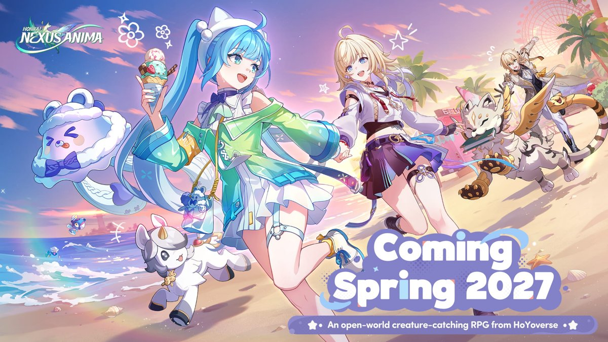
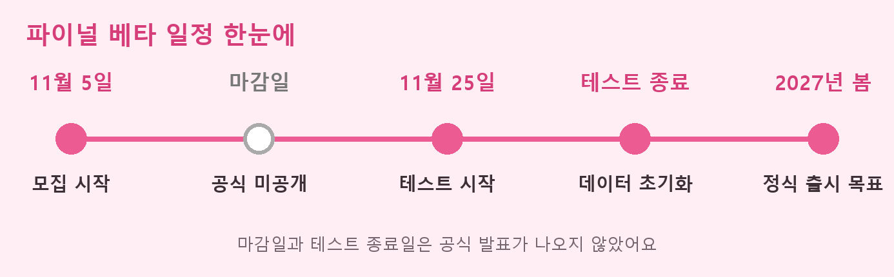
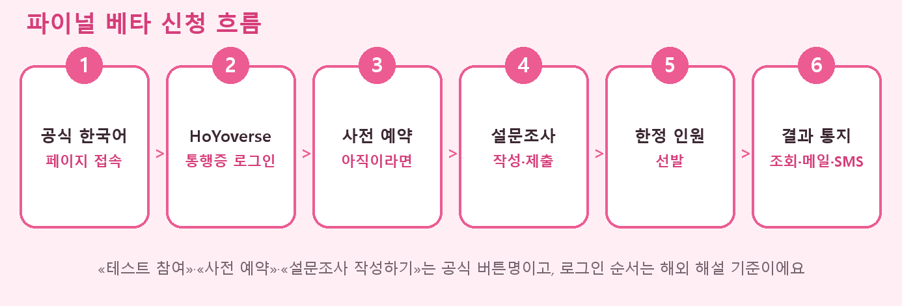

붕괴 넥서스 아니마 파이널 베타 신청방법 11월 25일 테스트 추첨 정리
붕괴 넥서스 아니마 파이널 베타 신청방법을 찾아 들어오셨다면 궁금한 건 어디서 신청하는지, 그리고 신청만 하면 다 해볼 수 있는지일 텐데요. 「붕괴: 넥서스 아니마」는 호요버스가 만드는 크리처 수집 오픈월드 RPG예요. 공식 한국어 페이지에는 「파이널 베타 테스트」 모집 중이라는 제목이 올라와 있고, 정리하면 11월 25일에 시작하는 테스트이고, 게임을 사전 예약한 뒤 모집 설문을 작성해야 하며, 한정 인원만 선발해요. 마감일은 아직 확인하지 못했으니 저라면 11월 25일이 오기 전에 설문부터 넣어 둘 것 같아요.

공식 한국어 페이지가 쓰는 대표 이미지예요. 문구는 영문으로 올라와 있어요.
이미지 출처: 호요버스 「붕괴: 넥서스 아니마」 공식 한국어 페이지의 대표 이미지(공식 CDN 게시본) · 네이버 본문엔 받아서 재업로드 권장
파이널 베타 테스트는 언제 모집하고 언제 시작하나요
파이널 베타 테스트는 2026년 11월 5일에 모집이 시작됐고, 테스트 자체는 11월 25일 수요일에 시작해요. 모집 시작부터 테스트 시작까지는 20일이에요. 공식 한국어 명칭은 「파이널 베타 테스트」인데 게임메카는 «파이널 비공개 테스트»라고 부르고 있어서, 검색하실 때 두 표현을 같이 쓰시면 편하죠. 6~7월의 진화 테스트와는 별개 회차예요.

모집 시작부터 정식 출시 목표까지 순서만 먼저 잡아 봤어요.
| 항목 | 내용 |
|---|---|
| 플랫폼 | PC · Android · iOS |
| 신청 조건 | 게임 사전 예약 후 모집 설문 작성(공식 한국어 페이지) |
| 선발 방식 | 공식은 «한정 인원 선발»까지만 밝혀요. 인벤글로벌 등 매체는 추첨(random draw)이라고 전해요. |
| 결제·데이터 | 결제 기능 미지원, 테스트가 끝나면 데이터 삭제(공식 FAQ) |
신청은 어디서 어떻게 하는 건가요
신청은 공식 한국어 페이지(hna.hoyoverse.com/ko-kr)에서 게임을 사전 예약하고 모집 설문을 작성해 제출하는 방식이에요. 공식 문구가 「게임을 사전 예약해야 파이널 베타 테스트 모집에 참여할 수 있다」고 못 박고 있거든요. 순서는 이렇게 이어져요.
- 공식 한국어 페이지에서 «테스트 참여» 버튼을 눌러요.
- HoYoverse 통행증(계정)으로 로그인해요. 해외 해설에는 로그인 뒤 같은 버튼을 한 번 더 누른다고 나와 있어요.
- 사전 예약을 안 했다면 «사전 예약»을 누르고, 끝나면 «설문조사 작성하기»로 넘어가요.
- 게임 습관, 선호 장르, 기기 사양 같은 문항(해외 매체 기준)에 답하고 제출해요.
- 제출한 뒤에는 선발 결과를 기다려요.

신청부터 결과 통지까지 여섯 칸으로 줄여 봤어요.
보도자료에는 App Store 사전등록 링크도 따로 붙어 있는데, 사이트 안의 사전 예약과 같은 건지는 공식 문구로 확인하지 못했어요. 모집 참여 조건으로 못 박은 쪽은 공식 한국어 페이지 안의 사전 예약이라서, 테스트 신청은 사전 예약과 모집 설문을 둘 다 마치는 것으로 보시면 돼요. 당첨 여부는 공식 페이지의 자격 조회, 이메일, 문자 같은 경로로 안내된다고 해요.
로그인 전 첫 화면은 이렇게 보여요.
아직 확인하지 못한 건 뭐가 있나요
한국 계정 신청 가능 여부, 연령 제한, 기기 사양, 당첨 발표일은 아직 공식 안내가 나오지 않았어요. 확인한 것과 못 한 것을 표로 나눴어요.
| 항목 | 지금 알려진 것 |
|---|---|
| 신청 마감일 | 아직 공식으로 나오지 않았어요. 해외 일부 매체가 11월 22일(UTC)로 전하는데 한 곳뿐이네요. 일정 기준으로는 잡지 않으시는 게 좋아요. |
| 한국 계정 신청 | 공식 한국어 모집 페이지가 있다는 것까지만 알아요. 지역 제한 문구는 확인하지 못했어요. |
| 연령·기기 사양 | 이번 회차 안내는 확인하지 못했어요. 진화 테스트 내용을 그대로 적용할 수는 없어요. |
| 결제 | 공식 FAQ에 «결제 기능 미지원»이라고 나와 있어요. |
| 당첨 발표일 | 미정으로 보여요. 통지는 자격 조회·이메일·문자 등으로 와요. |
이 항목들은 설문 화면 안이나 이후 공지에서 풀릴 수 있어서, 지역·연령 문항이 나오면 그 안내를 따르시면 돼요.
이번 파이널 베타에서는 뭐가 달라졌나요
이야 마을에는 고풍스러운 은행·고층 오피스 빌딩·등대섬 같은 새 공간이 생기고, 크로마 아니마와 유년 아니마가 필드에 나타나요. 캠핑카로 쉬거나 아니마 서식지를 만들 수 있고, 손잡기·안기·들어올리기 같은 새 상호작용도 들어오네요. 호요버스 보도자료와 인벤글로벌 기사에 나온 내용이고, 한국어 명칭이 아직 안 나온 건 영문 직역으로 적었어요.
- 대전 콘텐츠 넥서스 아레나(Nexus Arena): 팀을 꾸려 매칭 대전을 하고 티어를 올려요.
- 이벤트 인연 규칙 조정(영문 Eidos Event Bond·Anima Event Bond, 한국어 명칭은 아직 확인되지 않았어요): 보도자료 기준으로 처음 얻는 5성 Eidos·Anima는 현재 한정 버전이 보장되고, 한정 Eidos를 얻으면 짝 Anima 동료를 무료로 받아요.
게임 소개나 캐릭터 이야기는 지난 CBT 글에서 다뤘으니 여기선 접어 둘게요. 당첨되셨다면 통지가 자격 조회·이메일·문자 등으로 오는 만큼 설문에 적은 연락처가 가장 중요하죠.
자주 묻는 질문
Q. 7월 진화 테스트에 참여했는데 이번에도 자동으로 선정되나요?
자동 선정이라는 문구는 공식 자료에서 확인하지 못했어요. 공식 FAQ에는 이전 비공개 테스트와 이번 테스트의 참가 자격이 서로 영향을 미치지 않는다고 나와 있어요(진화 테스트를 콕 집어 말하진 않아요). 지난번 참여 여부와 별개로 설문을 내 두시는 쪽이 안전하죠.
Q. 테스트에서 키운 데이터는 정식 출시 때 이어지나요?
정식 출시로 이어진다는 안내는 확인하지 못했어요. 공식 FAQ와 보도자료 모두 테스트가 끝나면 데이터가 삭제된다고 해요. 정식 출시는 2027년 봄을 목표로 하고 있고 정확한 날짜는 아직 정해지지 않았어요.
신청 전에 체크리스트로 한 번 훑어볼까요
신청 체크리스트
- 게임 사전 예약이 먼저라서, 안 하셨다면 이것부터 챙기면 좋아요.
- HoYoverse 통행증(계정)으로 공식 사이트 로그인이 되는지 확인해 두면 좋아요.
- 자격은 플랫폼마다 처음 로그인한 기기 한 대에 묶이고 변경·추가가 안 되니, 쓸 기기를 미리 정해 두면 좋아요.
- 메일함(스팸함 포함)과 자격 조회를 11월 25일 전까지 틈틈이 열어 보면 좋아요.
한정 인원 선발이라 운도 따라야 하지만, 신청서를 못 낸 채로 놓치는 것보다는 일단 내 두고 기다리는 쪽이 마음이 편하더라고요. 테스트 일정이 가까워지면 새 공지에 맞춰 다시 들고 올게요. 다들 당첨되시길 바라요~
✔ 붕괴: 넥서스 아니마 같이 보기 좋은 내용
· 지난 CBT 글: 붕괴 넥서스 아니마 CBT 테스트 참여 방법 게임 특징 정리
참고한 곳
· 「붕괴: 넥서스 아니마」 공식 한국어 페이지
· 호요버스 파이널 베타 모집 보도자료
· 인벤글로벌 파이널 베타 모집 기사
· 게임메카 파이널 비공개 테스트 기사
2026.11.10. 기준